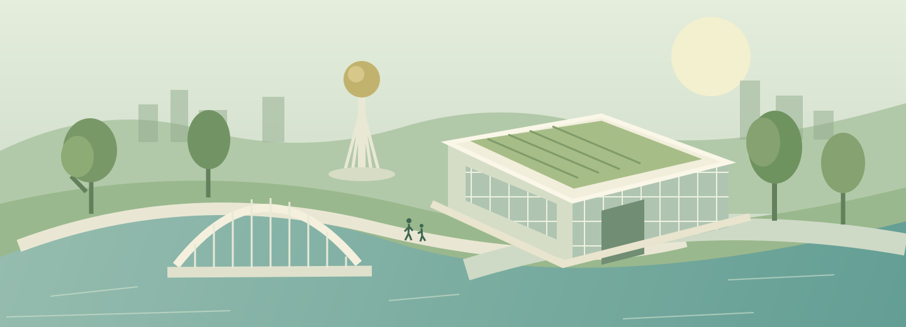

Центральная зона
Центральная часть композиции и серебристая арка.
Мы представляем, какой может стать Сергеевка.
ИИ помогает увидеть идеи. А мы придаём им форму —
своими решениями, творчеством и руками.

Водохранилище, Байтерек, площадь и школа — мы смотрим на знакомую Сергеевку по-новому. Эти образы созданы с помощью ИИ и отражают наше видение возможного будущего.
ИИ-визуализации — творческие концепции проекта, а не утверждённые планы строительства.
Продолжаем исследовать образ школы с помощью ИИ: от отдельного изображения — к видео макета.
ИИ — инструмент.
Видение — наше.
Будущее — в наших руках.
«Экошкола — территория будущего» — трёхмерный макет, который дети создали своими руками. Здесь наше видение получает объём, детали и настоящую форму.
Что можно увидеть в видео макета
Центральная часть композиции и серебристая арка.
Объёмные элементы, которые делают пространство макета разнообразным.
Зелёная зона как часть образа экошколы будущего.
Вход в школьное пространство и декоративные элементы.
Будущее Сергеевки начинается с тех, кто умеет мечтать
и готов воплощать свои идеи.